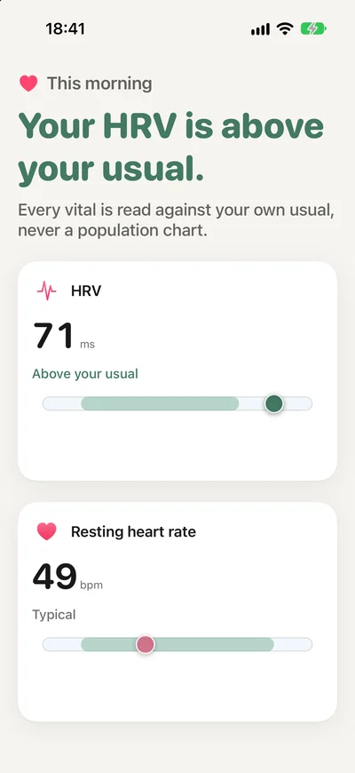
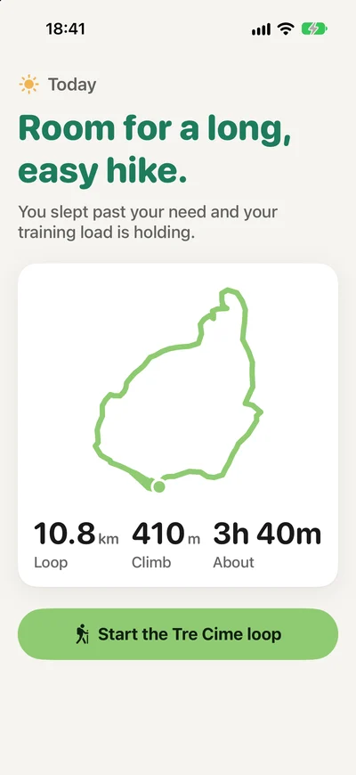

Your body, your usual,
your next move.
Aera reads your Apple Watch against your own normal. Each morning it says how today compares, and after a walk, run or ride, what changed.
Free · No account · Works with any watch or ring that writes to Apple Health

Your normal.
Sleep, heart rate, blood pressure and strength, each held against a range learned from your own weeks. A number means little on its own. Next to your usual, it tells you something.
The green band is your usual. HRV 71 ms sits above it; resting heart rate 49 bpm sits inside.

Today.
Each morning Aera says what today can take, from your recent nights and days held against your usual. A nudge, never an order. Take it on a route you already know, or plan a new loop with every turn shown before you reach it.

What changed.
After a walk, run or ride, Aera reads the workout back against your usual. Your weeks come back as a recap film, and a route can be flown again in 3D over the real ground.
And the long view: biological age and sleep reserve, over months.
Health numbers stay on your iPhone.
No account and no server doing the maths. Aera reads Apple Health on your phone and works out every score there. Analytics stay off until you turn them on, and never include health values.
Read the privacy policyFree to start.
Free
- Sleep, stress and strain, against your usual
- Every run read back, every personal best
- Route planner with turn by turn
- Your first saved route
- Flyover for the last seven days
Premium
- Today’s session: how long, how hard
- Your body age
- Your sleep reserve and your places
- More saved routes
- Older Flyovers, full history, every export
Monthly, yearly or a one-time purchase. Yearly starts with a 7-day free trial.
Questions.
What does Aera do?
Aera reads what your watch, ring or phone writes to Apple Health and tells you what those numbers mean for you. Sleep, stress, strain and every run are held against your own usual, said in plain words, and each number opens a short article on how it was worked out. It also plans routes with turn-by-turn directions and replays runs in 3D.
Do I need an Apple Watch?
No. Aera reads Apple Health, so any watch, ring or app that writes your sleep, heart rate and workouts there will do: Apple Watch, Garmin, Polar, COROS, Oura, WHOOP and others. With only an iPhone, Aera works from steps and workouts, and the reads that need overnight heart data wait until there is some.
Is Aera free?
Yes. Sleep, stress and strain against your usual, every run read back, every personal best, the route planner with turn by turn, your first saved route and Flyover for the last seven days are free. Premium adds today’s session, your sleep reserve, your places, more saved routes, older Flyovers, full history and every export format.
Do I need an account, and where does my data go?
There is no account. Aera reads Apple Health on your iPhone and works out every score there, so health numbers stay on your iPhone. Product analytics stay off until you turn them on and never include health values.
How does Aera know what is normal for me?
It learns your usual range from your own nights and sessions over several weeks, then compares each new day with it. While your history is thin, it says it is still learning instead of guessing.
Is Aera a medical device?
No. Aera is for everyday wellbeing and training. Watch measurements such as sleep stages are estimates, and every article says where its number stops being reliable.
Which languages does Aera speak?
English, Hungarian, German, Spanish and French in full, and Italian, Japanese, Portuguese and Traditional Chinese in part.
Made by one person.
Aera is built by Gergő Varga, on his own, with no company behind it. A message from the app or from this site reaches him directly.
Write to himYour body, your usual,
your next move.
Every number opens to show how it was worked out, and says so when it doesn’t know. On your iPhone. No account.
Download on the App StoreFree on the App Store.